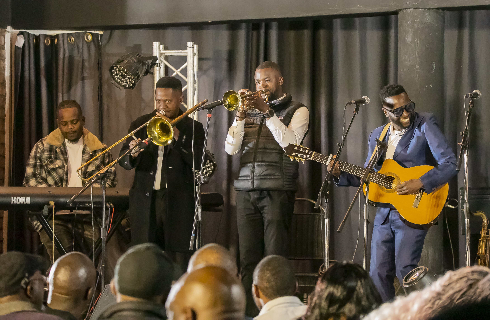
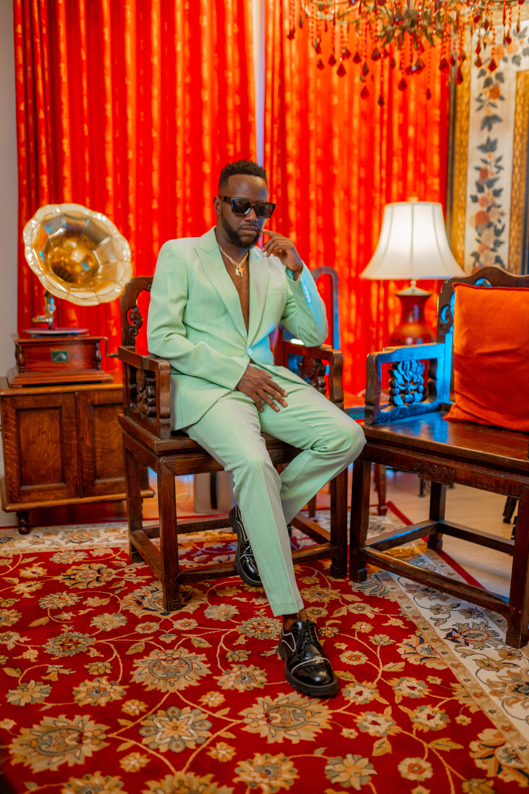

SWEET
NOTHINGS
NOTHINGS
Sweet Nothings
Romantic Afrobeat • Trace TV exposure
Listen on Spotify →ZIMBABWE • AFRICA • THE WORLD
THE REBIRTH
Same roots. New horizons.
THE HIGHER-TAKER
Josh Meck is an award-winning musician, bassist, composer and performer whose career spans more than 15 years. His work moves through jazz, Afrobeat, Afropop and contemporary world music while keeping Zimbabwean rhythm and identity at its core.
A seasoned live musician with an evolving contemporary voice.
Josh's journey has taken him to stages across Africa and Europe, including Germany, Austria, Switzerland, the Netherlands and the United Kingdom. His performance history includes Africa Festival Würzburg, Linz Festival, Music Meeting and Ronnie Scott’s, alongside collaborations with respected musicians from Zimbabwe and beyond.
In 2023, Josh received a Zimbabwe Music Awards (ZIMA) Best Jazz Album award for Nhaka Yemusha, a project celebrating Zimbabwean musical heritage through a contemporary lens.
Singing in Shona and English, Josh uses music as a bridge between cultures, generations and experiences.
The new catalogue is lighter, warmer, rhythmic and contemporary — while the musicianship and African identity remain.
Romantic Afrobeat • Trace TV exposure
Listen on Spotify →Contemporary romantic release
Watch on YouTube →New REBIRTH-era single
Explore →03 / THE NEW ERA
Not a beginning. A transformation.
REBIRTH is Josh Meck choosing to evolve without abandoning his roots. It brings more than 15 years of musicianship, international performance experience and Zimbabwean musical heritage into a fresh contemporary language.
New sound. Clean visuals. Renewed creativity. A different drive.
Built for stages of different sizes.
From intimate acoustic sets to full-band festival performances, Josh's live project can adapt to the event. Depending on the brief, performances can feature vocals, bass, guitar, percussion, playback and horn textures.
Enquire about bookingFESTIVAL / MEDIA / BOOKING
A concise industry profile covering biography, career highlights, recent releases, live performance and booking information.
“THE ROOTS REMAIN.
THE SOUND EVOLVES.”
Bring the REBIRTH to your stage.
For festivals, concerts, cultural events, corporate performances and international bookings:

